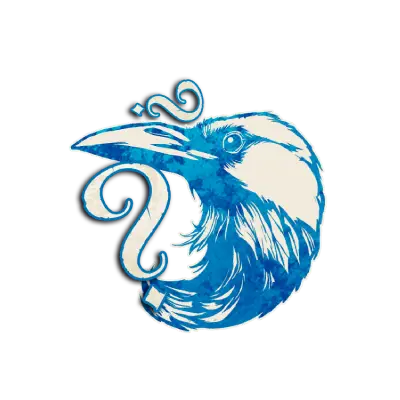
Townsfolks in most cases, make up the majority of players. They are aligned with the good team and each has an ability that benefits their team.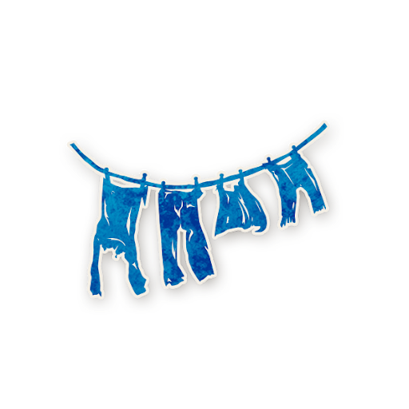
Librarian: Starts the game knowing that one of two players are a specific outsider.
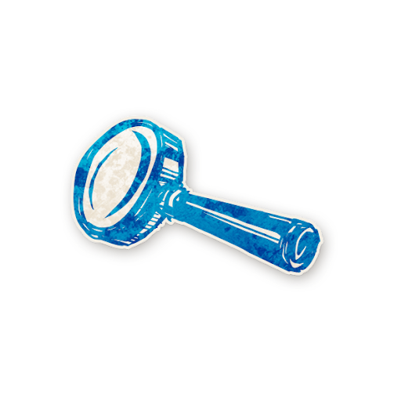
Investigator: Starts the game knowing that one of two players are a specific minion.
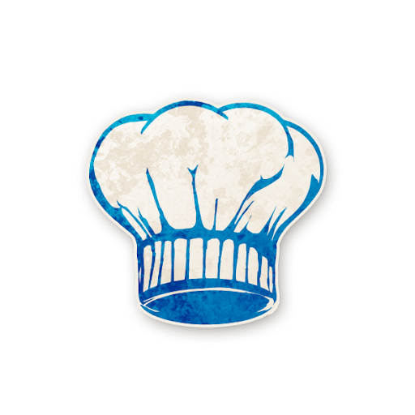
Chef: Starts the game knowing how many pairs of evil players are sitting next to each other.
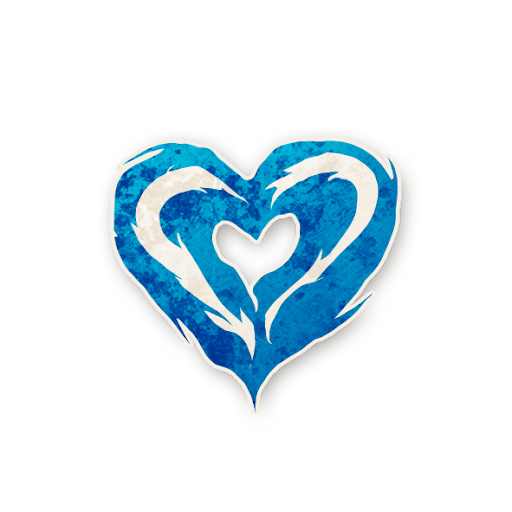
Empath: Learn each night how many of their neighbors are evil.

Fortune teller: Selects two people each night and learns if either of them are the demon. One good player registers as a demon.
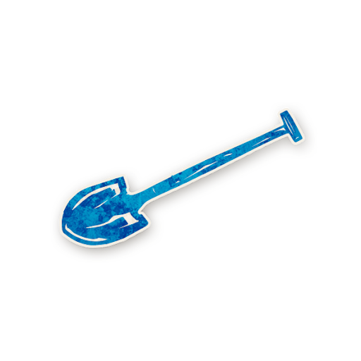
Undertaker: Each night, learn the role of the most recent executed player.
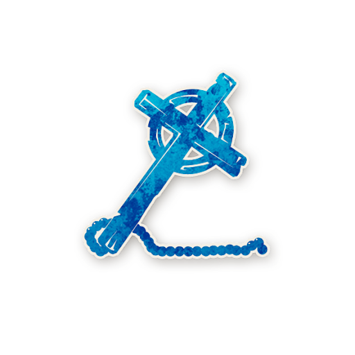
Monk: Each night, select a single player other than yourself to protect. For the rest of the night they cannot be killed by the demon.
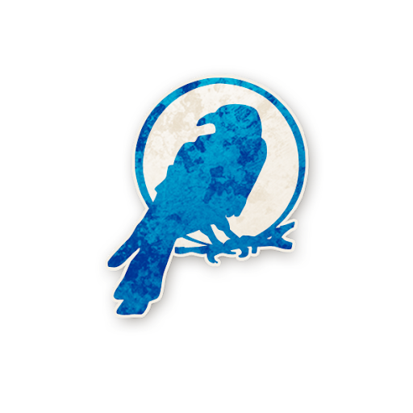
Ravenkeeper: If killed by the demon, they are able to select any single player to learn their role..
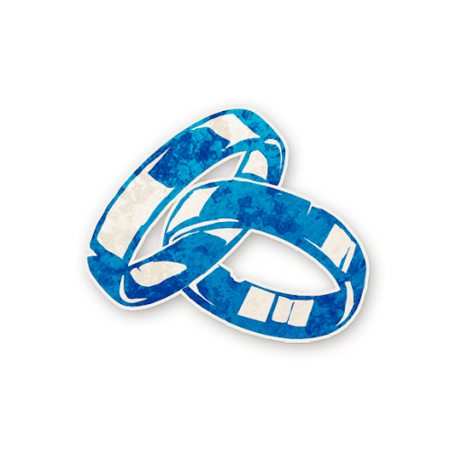
Virgin: Once per game, the first time you are nominated for execution, the person nominating you instantly dies.
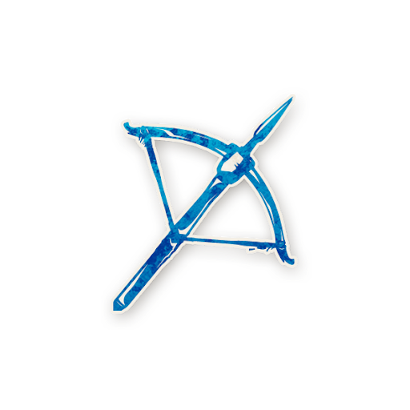
Slayer: Once per game, during the day, you can publicly select a player. If and only if they are the demon, they die.
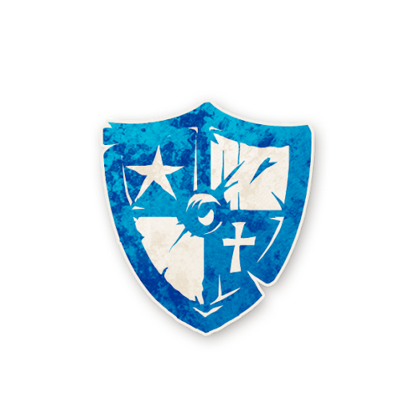
Soldier: Cannot be killed by the demon.
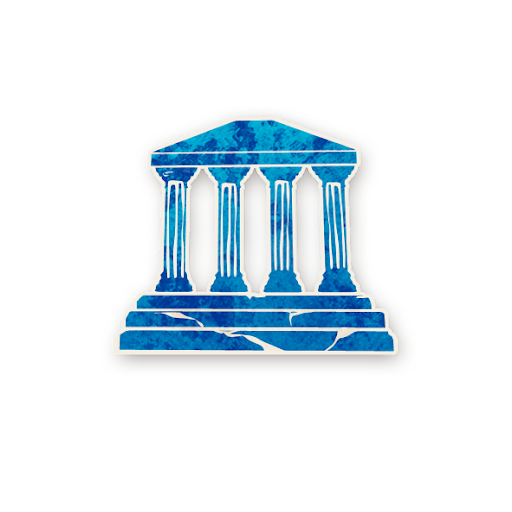
Mayor: If only 3 alive players remain and nobody is executed, the good team wins.